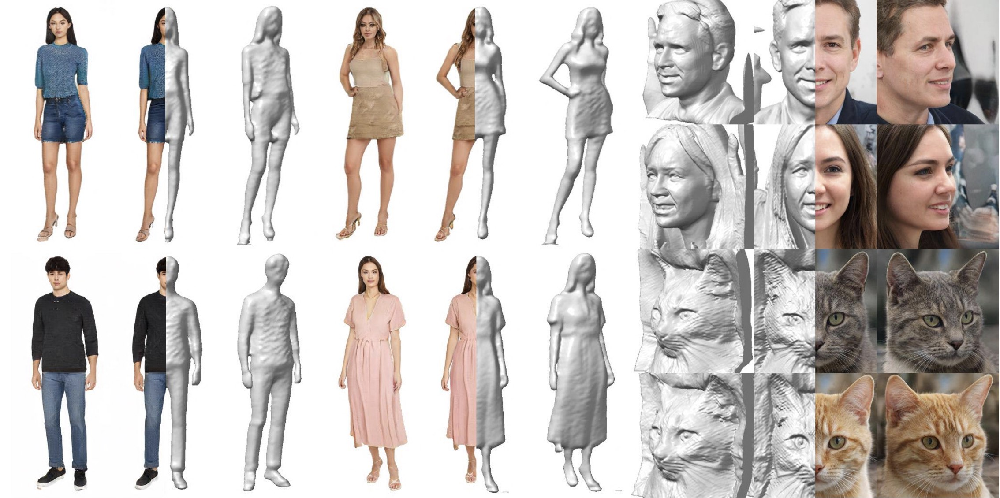
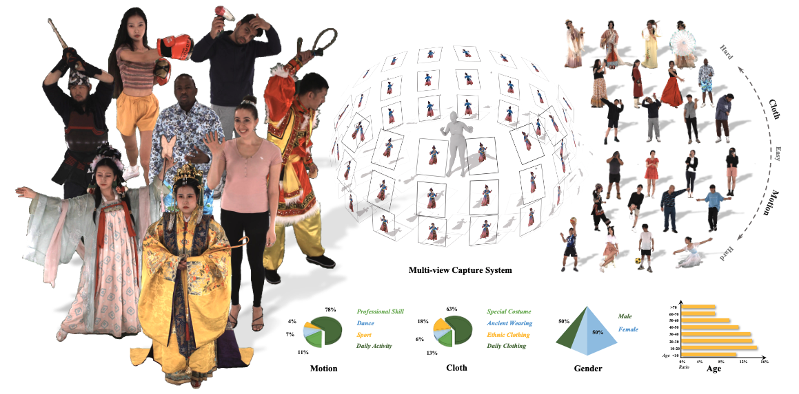

|
Honglin He (何泓霖) I am a third-year Master candidate(2021.09 - ) at the Department of Automation, Tsinghua University, advised by Professor Yi Zhang and Assistant Professor Shuo Feng. Additionally, I work as a research intern at Shanghai AI Laboratory, advised by Wayne Wu. Before that, I received my B.Eng(2017.09 - 2021.06) in the Department of Automation, Xiamen University, advised by Associate Professor Xunyu Zhong. My research interest typically lies in Generative AI, Neural Rendering.
|
{kind=link}
ResearchRepresentative papers are highlighted. |
|
 |
OrthoPlanes: A Novel Representation for Better 3D-Awareness of GANs
Honglin He*, Zhuoqian Yang*, Shikai Li, Bo Dai, Wayne Wu† ICCV, 2023 project page / video / arXiv We propose a hybrid explicit-implicit 3D Scene representation called OrthoPlanes, which can be used in neural rendering, 3D content generation, etc. |
|
 |
DNA-Rendering: A Diverse Neural Actor Repository for High-Fidelity Human-centric Rendering
Wei Cheng*, Ruixiang Chen*, Wanqi Yin*, Siming Fan*, Keyu Chen*, Honglin He, Huiwen Luo, Zhongang Cai, Jingbo Wang, Yang Gao, Zhengming Yu, Zhengyu Lin, Daxuan Ren, Lei Yang, Ziwei Liu, Chen Change Loy, Chen Qian, Wayne Wu, Dahua Lin, Bo Dai†, Kwan-Yee Lin† ICCV, 2023 project page / arXiv |
|
|
MetaUrban: A Simulation Platform for Embodied AI in Urban Spaces
Wayne Wu, Honglin He, Yiran Wang, Chenda Duan, Jack He, Zhizheng Liu, Quanyi Li, Bolei Zhou† Preprint (arXiv), 2024 project page / arXiv |
|
This site is based on Jon Barron's template. |